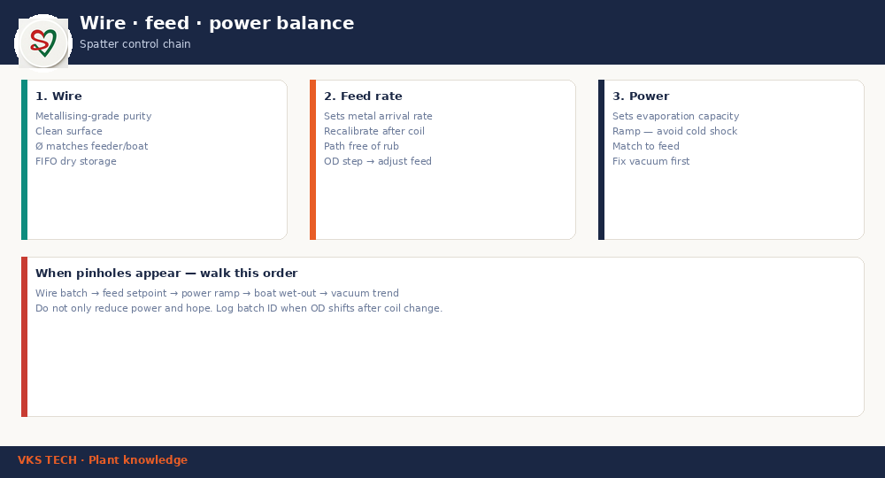

🧵 Aluminium Wire for Metallising — Purity, Diameter, Feed & Spatter Control
📖 11-min read · Metalliser consumables · Operator + process
Wire is not “just aluminium.” On a metalliser it is the rate at which metal arrives at the boat. Wrong purity, diameter drift, or feed miscalibration shows up as OD swings, spatter, pinholes, and boats that die early. This post is the ops consumable view — not “why we choose aluminium as a metal” (that is a different article).
- Typical wire Ø: often ~1.0–1.2 mm on many Indian lines (confirm your feeder + boat)
- Purity: use metallising-grade certified wire; reject oily / oxidised surface
- When OD jumps after a coil change: check batch ID before touching boat current
- Spatter chain: wire → feed → power → boat wet-out → vacuum

1. Purity and surface
Impurities and surface oil do not only hurt optical density. They react at the boat and accelerate ceramic wear. Demand certificates of analysis, quarantine suspect coils, and keep a simple approved-supplier list on the board.
2. Diameter and feed rate
Diameter sets how much metal arrives per revolution of the feeder. A 2% diameter drift is not “nothing” — it is a systematic OD bias. After every coil change, verify feed calibration, not only “start and hope.”
3. The spatter / pinhole walk
When metal dots or pinholes appear, walk this order before raising boat current:
- Wire batch and surface condition
- Feed setpoint vs last good recipe
- Power ramp (cold shock vs stable pool)
- Boat age and wet-out pattern
- Vacuum trend vs baseline
4. Storage FIFO
Open coils pick up moisture and shop dust. FIFO, sealed storage, and dry handling reduce “mystery Monday OD” after weekend humidity.
🧵 मेटलाइज़िंग के लिए एल्युमिनियम वायर — शुद्धता, व्यास, फीड और स्पैटर नियंत्रण
📖 11 मिनट · मेटलाइज़र कंज़्यूमेबल · ऑपरेटर + प्रोसेस
वायर “सिर्फ एल्युमिनियम” नहीं है। मेटलाइज़र पर यह वह दर है जिस पर धातु बोट तक पहुँचती है। गलत प्यूरिटी, व्यास ड्रिफ्ट या फीड मिसकैलिब्रेशन OD स्विंग, स्पैटर, पिनहोल और जल्दी मरने वाली बोट के रूप में दिखता है। यह पोस्ट ऑप्स कंज़्यूमेबल दृष्टि है — “धातु के रूप में एल्युमिनियम क्यों” वाला लेख अलग है।
- Typical वायर Ø: कई भारतीय लाइनों पर ~1.0–1.2 mm (अपना फीडर + बोट कन्फर्म करें)
- प्यूरिटी: मेटलाइज़िंग-ग्रेड सर्टिफाइड वायर; तैलीय/ऑक्सिडाइज़्ड सतह रिजेक्ट
- कॉइल चेंज के बाद OD जंप: बोट करंट छूने से पहले बैच ID चेक करें
- स्पैटर चेन: वायर → फीड → पावर → बोट वेट-आउट → वैक्यूम
1. प्यूरिटी और सतह
अशुद्धियाँ और सरफेस ऑयल सिर्फ ऑप्टिकल डेंसिटी नहीं बिगाड़ते। वे बोट पर रिएक्ट करते हैं और सिरेमिक घिसाव तेज़ करते हैं। COA माँगें, संदिग्ध कॉइल क्वारंटाइन करें, बोर्ड पर अप्रूव्ड-सप्लायर लिस्ट रखें।
2. व्यास और फीड दर
व्यास तय करता है फीडर के प्रति चक्कर कितनी धातु आती है। 2% व्यास ड्रिफ्ट “कुछ नहीं” नहीं है — यह सिस्टमैटिक OD बायस है। हर कॉइल चेंज के बाद फीड कैलिब्रेशन वेरिफाई करें।
3. स्पैटर / पिनहोल वॉक
जब मेटल डॉट या पिनहोल दिखें, बोट करंट बढ़ाने से पहले यह क्रम चलाएँ:
- वायर बैच और सतह
- फीड सेटपॉइंट बनाम पिछली अच्छी रेसिपी
- पावर रैम्प (कोल्ड शॉक बनाम स्थिर पूल)
- बोट आयु और वेट-आउट पैटर्न
- वैक्यूम ट्रेंड बनाम बेसलाइन
4. स्टोरेज FIFO
खुली कॉइल नमी और शॉप डस्ट लेती हैं। FIFO, सील स्टोरेज और ड्राई हैंडलिंग “मिस्ट्री मंडे OD” कम करते हैं।